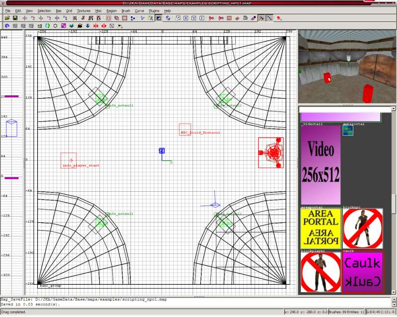
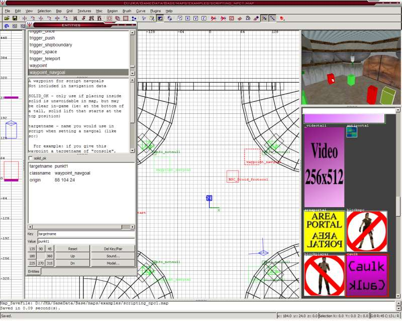
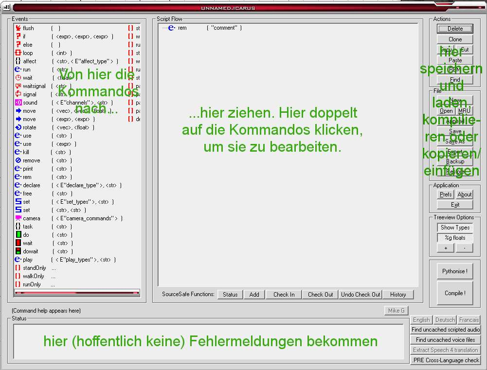
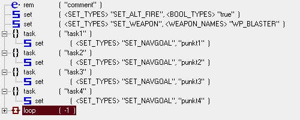
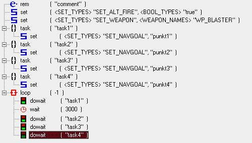

>> Mapping Academy - Tutorials <<
(c) 2006 www.darth-arth.de
NPCs Befehle erteilen
VORRAUSSETZUNGEN:
>> Tutorial Scripting - Installation BehavEd (Script-Editor) (hier)
>> Tutorial Mein erster Raum (hier)
In dieser Lehreinheit (Tutorial) Lernen wir, einen NPC durch die Gegend zu schicken, und ihn eine bestimmte Animation abspielen zu lassen.
Dieses Tutorial beschäftigt sich mit NPC's und damit, wie man sie mit Hilfe von Scripts steuern kann.
Zuerst brauchen wir einen Raum mit einem info_player_start einem NPC (Rechtsklick und im Menü auswählen). Ich nehme mal einen npc_stormtrooper.

Als nächstes müssen wir an den Punkten, zu denen der NPC laufen soll, Waypoint_navgoals platzieren. (Rechtsklick->Waypoint_->Waypoint_Navgoal).
Diese Wegpunkte kriegen jetzt noch Namen. Wir klicken sie einen nach dem anderen an, drücen N und geben ein:
-targetname Punkt1 (bzw. Punkt2, Punkt3 usw.)

Zu guter Letzt klicken wir den NPC an, drücken N und geben ein:
-spawnscript mein_npc_script1 (das ist der Name des Scripts das ausgeführt wird, wenn der NPC auf der Map erscheint, ausgehend von JKA/GameData/Base/Scripts)
-und wir machen ein Häkchen bei Cinematic, damit er von alleine nichts tut.
Jetzt speichern wir die Map ab und kompilieren sie (bsp -meta).
Nun fehlt nur noch das Script. Öffnen wir zuerst BehavEd. So sieht das aus:

Danach überlegen wir: Was soll der NPC tun?
Sagen wir mal, er soll immer im Kreis von einem Wegpunkt zum nächsten gehen, einen E11-Blaster haben und bei Wegpunkt 1 für fünf Sekunden warten.
Zuerst stellen wir die Waffe ein.
Also ziehen wir den Befehl Set(Set_types) in unser Script. Damit stellen wir Sachen ein.
Als nächstes bearbeiten wir das Kommando durch Doppelklicken darauf. In der Liste links wählen wir SET_WEAPON aus, klicken unten auf Re-Evaluate, stellen dann rechts WP_BLASTER ein und drücken Ok.
Nun hat der Stormtrooper einen E11-Blaster. (Hatte er eigentlich schon vorher, aber ein NPC_Jedi hätte ihn z.B. nicht gehabt)
Jetzt zum Laufen:
Erstmal erstellen wir tasks mit den Laufkommandos:
Wir erstellen so viele Tasks, wie wir Wegpunkte haben, geben jedem einen eigenen Namen (z.B. task1, task2 etc. Es darf aber keine zwei tasks mit gleichem Namen geben!) und tun da jeweils ein Set(set_types) mit SET_NAVGOAL und den targetnames der Waypoints rein.
Da er immer im Kreis laufen soll, machen wir anschließend eine Endlosschleife.
Das geht mit dem Loop Kommando. Also fügen wir das zu unserem Lift hinzu.

Für eine Endlosschleife müssen wir -1 beim loop eingeben, aber das ist schon standard also öffnen wir gleich den Loop mit Klick auf das +.
Nun fügen wir ein DoWait hinzu (in den Loop). Damit führt man tasks aus, und es wird gewartet, bis der task fertig ausgeführt ist.
In das DoWait müssen wir task1 schreiben, damit der task mit dem Namen task1 ausgeführt wird.
Ein Wait Kommando kommt als nächstes. Wir stellen es auf 3000 (Millisekunden = 3 Sekunden) ein.
Letztendlich kommen noch die restlichen DoWaits.

Jetzt nur noch speichern (unter base/scripts/mein_npc_script1) und kompilieren. Fertig! Wir können testen. Wir starten JKA und geben in die Konsole ein:
sv_pure 0 (damit auch Sachen, die nicht in pk3's sind, wie unser Script, geladen werden)
map mapname (mapname ist natürlich der mapname)
mfG Mr. Wonko
Download der Sourcefiles: Download
Alle Bilder, Texte, Grafiken, wenn nicht anders gekennzeichnet:
© 2000 - 2006 (Artur L.) www.darth-arth.de
Nur zur privaten Nutzung. Kopieren nicht gestattet. Darth-Arth.De
ist ausdrücklich nicht für den Inhalt externer Seiten verantwortlich. Es gelten
die angegebenen Nutzungsbedingungen.